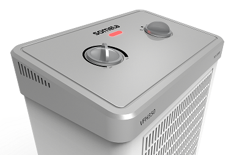
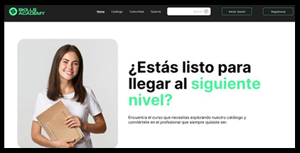

SOFTWARES


Diseño e-commerce que potencia la forma en que tus productos se ven y se venden. Integro diseño de interfaces, modelado 3D y visualización de productos para desarrollar una solución completa para tu marca.
Ver caso de estudio

Diseño páginas web integrando investigación, estructura y diseño visual para crear experiencias claras, funcionales y orientadas a la conversión.

Desarrollo Modelados 3D con precisión profesional, orientados a visualización digital, como base para renders utilizados como presentación de productos en e-commers.

Creo imágenes fotorrealistas a partir de modelos 3D, optimizadas para e-commerce, catálogos y plataformas digitales, destacando el producto con alto nivel de detalle y calidad visual.

Soy diseñadora con formación en Diseño Industrial y actualmente especializada en Diseño UX/UI. Mi experiencia en diseño de productos no solo me ha permitido aprender a presentarlos de manera profesional, sino también a desarrollar una base sólida en procesos de diseño, pensamiento estructurado y resolución de problemas; habilidades que hoy aplico en el diseño de interfaces digitales.

El estudio busca comprender cómo las personas interactúan con la plataforma de UBER, identificando necesidades, motivaciones y principales puntos de fricción. Se aplicaron herramientas de investigación UX como entrevistas, encuestas, User Persona y Mapa de Empatía, basadas en experiencias reales.

Diseño de una plataforma educativa digital inclusiva, accesible, desde un enfoque de diseño centrado en el usuario. Ux4All responde a los problemas de accesibilidad y usabilidad presentes que existen actualmente en sitios web de aprendizaje similares.

Rediseño de plataforma de aprendizaje digital, orientada a cursos del área tecnológica . SkilsAcademy, se desarrolló en base a investigación y testeo con usuarios reales, creando un prototipo inicial interactivo que fue iterado sucesivamente hasta alcanzar una solución funcional y centrada en el usuario


"SkillsAcademy" es una plataforma EdTech de cursos tecnológicos. Su rediseño nació de la necesidad de eliminar el ruido visual y la falta de consistencia de la interfaz original, factores que dificultaban la navegación y afectaban la experiencia del usuario

El proceso de iteración fue el desafío más grande de este proyecto para mi, debido a que para realizar mejoras de la web, debíamos contar con personas reales para testear nuestros prototipos y que además cumplieran con nuestro "Perfil de usuario" es decir, personas que estuvieran ligadas al aprendizaje online de alguna manera, como por ejemplo: Personas que ya hayan comprado cursos en otras plataformas o simplemente que estén interesadas en aprender bajo esta modalidad.
Luego de aplicar un análisis heurístico en nuestro prototipo inicial, basándonos en los principios de usabilidad de Jakob Nielsen, para detectar lo bueno y lo malo de nuestro diseño, pasamos a realizar un segundo prototipo interactivo y de alta fidelidad, con un sistema de diseño consistente y una estructura de información lógica que prioriza la claridad y la accesibilidad en los flujos principales (búsqueda e inscripción). Se aplicó un diseño RESPONSIVE y luego se testeo con usuarios a través de una plataforma digital. El resultado nos permitó iterar nuevamente el diseño, hasta conseguir su versión más optimizada según la respuesta de los usuarios.


Figma: Para el prototipado de alta fidelidad y la creación de componentes del sistema de diseño.
Maze: Para la ejecución de tests de usabilidad no moderados y la recolección de métricas de interacción.

El mayor aprendizaje fue entender que el diseño es un proceso cíclico, no lineal. Aprendí que la validación con usuarios reales es la única forma de validar las decisiones de diseño y la úmica forma se seguir iterando con fundamentos. Comprendí, que una tarea "completada" no siempre equivale a una experiencia "eficiente", y que el éxito del diseño reside en la capacidad de iterar sobre los puntos de fricción encontrados.

UX Research
y Auditoría Heurística

Arquitectura
de la información

Prototipado
interactivo en Figma

Diseño de
interfaces (UI)

Testeo de
usabilidad con usuarios